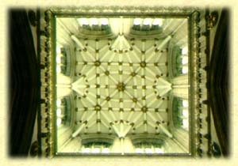

Etymological roots are indicated by the sign ç.
Language groups are as follows: SKT: Sanscrt; E: Egyptian; HB: Hebrew; GK:
Greek; L: Latin; AS: Anglo Saxon; ME: Middle English; OHG: Old High
German; G: German; OFR: Old French; FR: French; IT: Italian; ICL:
Icelandic; N: Nordic; SW: Swedish.

Boat - HB: çBTH = interior space/receptacle/dwelling/intrinsicness; SKT: çBHU = to be/to dwell; cf. bhavan (house; bower); FR: bateau (boot, booth, bode [message/announcement], abode. Body - AS: bod = message; bodian = to announce; boda = messenger; beodan = to command (bid, bode); bettan = to help, kindle; Gothic: bota = advantage, profit (to boot, booty); cf. bodice = corset; boot - OF: botte, L: botta/butta (butt) = cask (bottle, pot, butt); ME: bothe, G: bude = booth, stall, toll house, hut, residence (çBU/BHEU = to dwell, to be); çBHEUDH = to awake, inform, bid, command; AS: beodan = to bid. HB: çB = interiority, interior action, dwelling; the mouth; çBD = distinctness, sepatateness, isolation, solitude, individuality, particular existence; opening, to open the mouth, to speak; çBTH = interior space, place, receptacle, proper dwelling, habitation; something detached, cut-off, distributed in parts; çBOTH = to dwell, spend the night, retire; particular and separated locality, interiority; beten = to be hollow, belly, womb; betach = place of refuge, safety, assurance, security; beyith = place, house, court, palace, temple, prison, door (Beyith El, Beth-Elohim, Bethlehem = house of God); basar = to be fresh, full, rosy; to announce, preach, publish; flesh, body, skin. HB: geshem = body, cf. geshuwr = to join, bridge; çGB = organic fructification, something placed over or under another; convexity - boss, excrescence, protuberance, eminence, the back; concavity, fosse, (çKB = excavation, container of measure; vesica pisces).